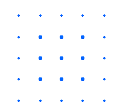
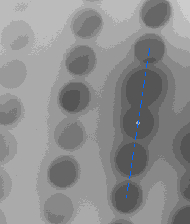

Distributed By: Virtual Labs
Generating a 2 Dimensional Lattice
One of the first steps in the identification or determination of an unknown
crystal is the calculation of the crystal's primitive lattice. Transmission
electron microscopy is an especially powerfull methodology to use for this
step because the size of the ewald sphere allows the scientest to easily
generate a set of 2 dimensional lattices with known orientations between
each lattice.

Simulated Diffraction Pattern Showing 2-D Lattice Aspects.
To Generate a 2-dimensional lattice for an experimental position:
- Get an SAD Object by using the New Menu Item Under the File Menu.
- If it is desired not to have calculated patterns interfering with
experimental values, deactivate
all crystals for calculation.
- Import the Diffraction Pattern Of Interest.
- Align the Sample holder with
the pattern*
- Set the
Sample Holder Tilts*
- Align the Pattern Center with the Beam Center Using the Move
Pattern menu item.
- Select The Generate Lattice item under the Exp. Info Menu,
Lattice Heir Menu.
- Draw a line along one systematic
row.

- Click on this line and set
the number of g-vectors contained along the line. In the example this
is 4.
- Draw the second line and set the number of g-vectors.
- Hit option-g to generate the lattice.
- Move any generated disks which appear to be misaligned with the experimental
pattern.
- Hit option-t to generate a table of generated spots.
- Returning to the SAD Object, by hitting option-d, the generated points
will be deleted.
The steps can now be repeated missing the step on Stage Object alignment.
* Required if the eventual goal is a complete 3-d experimental pattern.
Author: J.ames T.
Stanley
 Desktop
Manual
Desktop
Manual
Distributed By: Virtual
Labs
Last Updated:1/12/96 Sat, Apr 27, 1996